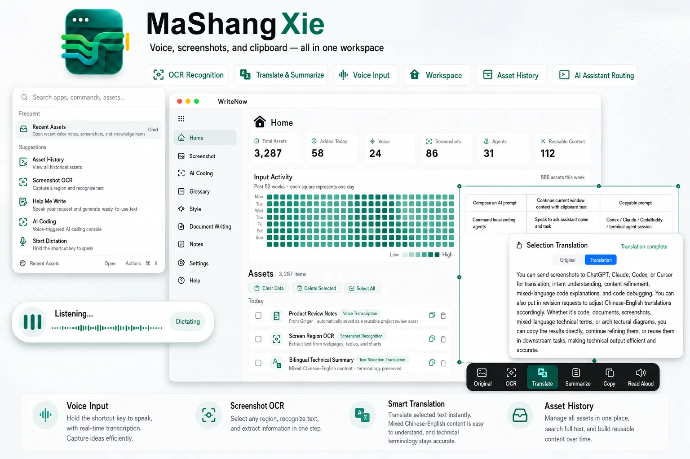
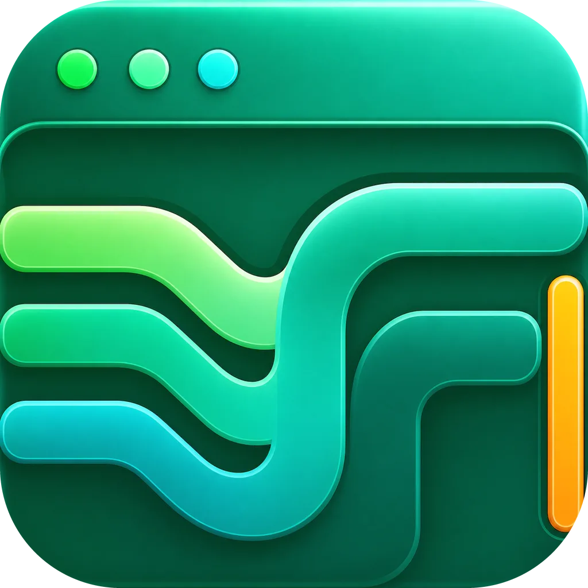

不跳窗口，不自动发送，文本回到当前光标。
macOS input workspace
Speak, capture, translate, and keep the result.
VoxFlow stays attached to the app you are already using: voice input, screenshot OCR, translation, clipboard history, and AI assistant routing all become searchable local assets.
Speak to write
Capture text
Process selection
Keep assets
Route AI
Download for macOS
macOS 15+ · Apple Silicon
v1.12.1 · Free & open source

截图、剪贴板图片、网页和错误弹窗都能变成文本。
翻译、总结、朗读和复制在同一个结果面板完成。
语音、截图和剪切板会沉淀为本地可搜索资产。
工作流
一条输入路径，覆盖四种高频场景。
把想法说进当前应用
按住听写热键，VoxFlow 在浮层里显示实时转写；松开后写回当前输入框，剪切板和输入法状态会恢复。
把屏幕内容变成文本
框选页面、表格、报错或会议材料，OCR 后可以立即翻译、总结、朗读或复制。
把临时内容沉淀成资产
最近语音、截图和剪切板会进入工作台，按来源、时间和全文检索，随时再次复用。
把任务说给本地 Agent
说出 Codex、Claude、CodeBuddy 或终端会话名称，VoxFlow 先确认目标，再投递可复制的任务指令。
使用文档
安装后按这个顺序开始。
VoxFlow 是菜单栏应用。第一次打开先补齐 macOS 权限，再设置听写热键；之后所有能力都围绕当前应用和工作台展开。
- 授权权限麦克风、辅助功能、屏幕录制和剪贴板权限用于录音、写回和截图识别。
- 设置听写热键选择一个按住触发的快捷键，在任意输入框里说话并松开回填。
- 打开启动台用 ⌥Space 查看最近资产、搜索历史、复制内容或执行动作。
- 处理截图和选中文本用截图 OCR 或划词动作打开结果面板，再翻译、总结、朗读或发送给任务助手。
Updates
Recent releases, pulled from GitHub.
The landing page stays in sync with the repository releases, with a compact summary of what changed.
快捷键
不用记很多，只要先记住这几组。
本地优先
你的输入现场，结束后恢复原样。
资产历史默认保存在本机。选择本地模型时音频留在设备上；只有主动选择云端 ASR 或外部模型时，才会把对应内容发送给你配置的服务商。
